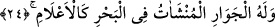

denizine ve yerilmiş kötü ahlak denizinden ibaret olan nefis denizine işâret vardır. Kalp
nefis hâline gelecek, nefis de kalp olacak şekilde birbirine karışmazlar. Çünkü,
aralarında akıl, ilim, şerîat ve tarikat vardır. Nefis mutmainne makamında olunca ondan
ve kalpten îman, yakîn, sâfîlik, nur, itminan ve gönül huzuru çıkar.
İbn Atâ demiştir ki; Rab ile kul arasında iki derin deniz vardır. Çok derin olan iki
denizden biri kurtuluş denizidir ki, o Kur’an’dır. Ona sarılan kurtulur. Çünkü, Allah
“Hep birlikte Allah’ın ipine (İslâm’a) sım sıkı sarılın.” (Al-i İmran, 3/103)
buyurmuştur.
Diğer deniz de helâk denizidir ki o da dünyadır. Ona yönelen mahvolur.
24. Denizde yüce dağlar gibi yükselen gemiler de O’nundur.
İbnü’ş-Şeyh demiştir ki; ana unsurlar dörttür: toprak, su, hava ve ateş. Yüce yaratan
“Allah insanı, pişmiş çamura benzeyen bir balçıktan yarattı” (er-Rahmân, 55/14)
âyet-i kerîmesiyle toprağın, çok şerefli ikrâma mazhar durumunu, yaratılışı hayretlik
uyandıran insanın aslı olduğunu açıklamıştır. “Cinleri öz ateşten yarattı.” (er-Rahmân,
55/15) âyeti ile de durumu çok hayretlik veren cinnin aslının ateş olduğunu açıklamıştır.
“İkisinden de inci ve mercan çıkar” âyet-i kerîmesiyle yine suyun, değeri çok büyük
olan bir başka mahlûkun aslı olduğunu açıklamıştır. Sonra hava’nın, dağlar gibi büyük
gemilerin yüzüp yürümesinde büyük etkisi olduğunu zikrederek “Denizde yüce dağlar
gibi yükselen gemiler de O’nundur” (er-Rahmân, 55/24) âyet-i kerîmesinde gemilerin
özellikle zikredilmesi, yelkenli gemilerin yürümesinde insanların bir etkisi olmadığı
içindir. İnsanlar da bunu itiraf ederek, “Rabbimiz mülk senindir, gemiler de senin
yarattığın hava ve rüzgarla yürür” derler. Batmak ve boğulmaktan korktukları zaman da
sadece Allah’a duâ ederler.
Gemiye “câriye” ismi verilmesinin sebebi, sahillerde iskele ve rıhtımlarda
gerektiğinde dursa da asıl işi denizde yüzüp yürümek olduğu içindir. Hizmetçi kıza da
câriye denilmiş olduğu gibi. Çünkü onun da esas işi efendisinin hizmetinde koşup
çalışmaktır. Âyette geçen “münşeât,” “yelkenleri yükseltilmiş” demektir. Münşeat, Sa’di
Müfti’nin haşiyesinde kaydedildiği gibi, “su üzerinde yükseltilmiş ve kendine mahsus
şekilde yürüyen” anlamında olması uzak bir ihtimal olmadığı gibi, “Allah onu inşa
ederek yarattı” deyiminden alınarak “yaratılmış” anlamında olması da mümkündür.
Âyette geçen “a’lâm” kelimesi, “yükseklik ve irilikte yüksek tepeler gibi” demektir.
Denizdeki gemiler karadaki dağlar gibidir. Karadaki develer, denizdeki gemiler, deyimi
de böyledir.